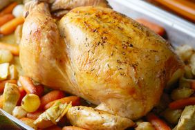

Classic Sunday Roast Recipe

About The Dish
Most weekends in the winter, you'll find me preparing a family Sunday roast dinner. You just can't beat a roast as the ultimate comfort food. This recipe will show you how to roast chicken, but can be easily adapted for any kind of meat. Allow yourself around 2 hours to create this dinner from scratch. Happy cooking!
Ingredients
1 Whole Chicken
Bag Of Maris Piper Potatoes
Carrots
Seasonal Vegetables
Chicken Stock
Butter
Oil
Corn Flour
Method
- Preheat the oven to 180c (fan oven).
- Place chicken in pan and add seasoning and butter to the top of the chicken. Put in oven for 1h30mins.
- Peel and chop the potatoes and prep the vegetables.
- Add potatoes to the pan and bring to boil. Simmer for 10 minutes.
- Drain the potatoes and shake them in the pan to fluff them up.
- Remove the tin from the oven and add some olive oil to the bottom of the chicken, then add the potatoes to the pan.
- With around 15-30mins remaining, cook your vegetables.
- When the chicken and potatoes are ready, remove from pan and leave to rest.
- Put the roasting pan on the hob, add the vegetable water, stock and cornflour to make gravy.
- When everything is ready, carve the chicken and serve!